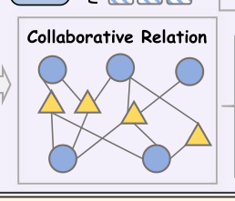

Behavior Tokens Speak Louder: Disentangled Explainable Recommendation with Behavior Vocabulary (行为Token更响亮：基于行为词表的解耦可解释推荐)
- 会议/期刊: AAAI 2026
- 作者与机构: Xinshun Feng, Mingzhe Liu, Yi Qiao, Tongyu Zhu, Leilei Sun, Shuai Wang（北京航空航天大学杭州国际创新研究院 / 软件环境全国重点实验室）
- 推荐链路定位: 端到端生成式（可解释推荐生成）
- 研究方向: 生成式推荐与离散语义ID / 大语言模型推荐
- 论文原文: https://arxiv.org/abs/2512.15614v1
- 开源代码: https://github.com/fxsxjtu/BEAT
TL;DR (1分钟核心速览)
现有可解释推荐依赖 ID 表征或冗长用户画像 prompt，前者无法泛化到冷启动、后者推理开销大且需微调 LLM。BEAT 提出轻量行为分词器：用 VQ-VAE 将图协同表征解耦为「宏观兴趣 + 微观意图」两级离散行为词表，并以多级文本语义监督（评论 [CLS] 对比 + LLM 抽取意图的掩码重构）桥接协同与语言空间，再用语义对齐正则把行为 token 直接嵌入冻结 LLM 的输入空间。在 Amazon/Google/Yelp 三个数据集上，零样本（无评论文本）设定下 BLEU/BARTScore/BERTScore 全面领先，Amazon BLEU 达 0.4195（较最强基线 TEA-GLM 0.3971 提升约 5.6%）。
Background & Motivation (背景与核心矛盾)
- 主流范式: 可解释推荐从 Att2Seq/NRT/PETER 的 ID 嵌入 + 评论生成，演进到 XRec/GraphGPT/TEA-GLM 等将协同图信号对齐进 LLM 语义空间。
- 前人局限一: ID 级表征对无评论的冷启动用户/物品直接失效；图方法虽缓解但存在过平滑，抹平个性化（图 1 中 user 7267 与 18640 交互史相似却动机迥异）。
- 前人局限二: LLM 类方法要么把大量画像文本塞进 prompt，要么需微调 LLM 或改动其结构，计算昂贵且绑定特定骨干，难以迁移。
- 核心洞察 (Key Insight): 用户行为可类比为「由多个词组成的句子」——相似用户/物品共享重叠语义 token，独特 token 组合对应特定潜在语义模式；离散词表天然规避 OOV 且可被 LLM 当作"外语词"理解。
- 本文切入点: 把协同信号压缩成少量可解释行为 token，仅训练一个轻量 projector 接入冻结 LLM，实现"免微调、可迁移、可解释"。
Method (核心方法设计)
1. 整体框架 (Overall Architecture)
BEAT 分两阶段。阶段一（行为分词器）: 在用户-物品交互图上做轻量 LightGCN 传播并做层平均，得到协同增强表征 \(z_u\)；将其分解为 1 个宏观兴趣向量与\(N\) 个微观意图向量，分别经两套 VQ 码本量化，构成统一行为词表；同时施加宏观（评论 [CLS] 的 InfoNCE）与微观（LLM 抽取意图的掩码重构）两级文本监督，使码本兼具协同与语言语义。阶段二（LLM 对齐）: 用两层 MLP projector 把行为 token 映射进冻结 LLaMA3-7B 的嵌入空间替换占位符，以语义对齐正则 + 解释生成 NLL 联合训练 projector，最终由 LLM 直接生成推荐理由。
flowchart TD
A["交互图 + 评论"] --> B["LightGCN 协同表征 z_u"]
B --> C["解耦: 宏观兴趣 + N 个微观意图"]
C --> D["双 VQ 码本 → 行为词表"]
E["评论[CLS] / LLM抽取意图"] --> D
D --> F["轻量 Projector 映射"]
F --> G["冻结 LLM 生成解释"]
2. 关键设计拆解 (Key Designs)
- 解耦式双码本行为词表：痛点是用单一 ID 或单一码本无法同时表达"群体共性"与"个体差异"。做法是把 \(z_u=[z_u^{macro}\|z_u^{micro(1)}\|\cdots\|z_u^{micro(N)}]\)分别对宏观/微观两套码本做最近邻量化\(c_j=\arg\min_k\|z_u^{micro(i)}-c_k\|_2^2\)，用户被表示为"1 个宏观词 + N 个微观词"的句子。直觉：宏观词刻画稳定大类偏好（如"历史爱好者"），微观词刻画跨用户共享的细粒度意图（如"耐用""易用"），组合即个性化。
- 多级文本语义监督：纯协同码本存在行为歧义、纯文本码本受评论稀疏所困。宏观层用评论 [CLS] 与量化表征的融合做 InfoNCE：\(\mathcal{L}_{macro}=-\sum_{i\in\mathcal{B}}\log\frac{\exp(s(e_i^{CLS},c_i^{macro}))}{\sum_{j\in\mathcal{B}}\exp(s(e_i^{CLS},c_j^{macro}))}\)；微观层因意图无序且无一一对应，改用掩码重构——随机遮蔽\(t\)个意图嵌入，用交叉注意力从行为 token 与未遮蔽意图中还原被遮蔽语义\(\mathcal{L}_{micro}=-\mathbb{E}\,\phi(e^{msk},f_\theta^c(c^{micro},S^{msk}))\)。直觉：让码本"学会说人话"，同时保留协同结构。
- 语义对齐正则 (SAR) + 训练目标：冻结 LLM 与行为 token 间存在分布鸿沟。SAR 先把解释文本中每个词嵌入 \(\epsilon_{w_i}\)映射到最近的行为 token\(\hat{c}_i\)，再约束两组相似度一致：\(\mathcal{L}_{SAR}=\sum_{(w_i,w_j)\in\mathcal{T}}\big(s(\hat{c}_i,\hat{c}_j)-s(\epsilon_{w_i},\epsilon_{w_j})\big)^2\)，即把 LLM 原生词表的内在语义关系"蒸馏"给行为 token。总损失\(\mathcal{L}_{tokenizer}=\alpha\mathcal{L}_{macro}+\beta\mathcal{L}_{micro}+\mathcal{L}_{behave}\)（\(\alpha=0.2,\beta=1\)），阶段二为\(\mathcal{L}_{SAR}+\mathcal{L}_{NLL}\)。负采样：宏观对比用 in-batch 负样本，微观用掩码自监督，无需显式难负采样；推理开销：仅 6 个 token/实体（1 宏观 + 5 微观），远低于画像文本 prompt，且 LLM 全程冻结。
Experimental Setup & Evaluation Protocol (实验设置与评估协议)
- 数据集与预处理（源自 XRec 划分，零样本设定：用户/物品有交互但无评论文本）：
| 数据集 | #Users | #Items | #Reviews | #Interactions | 场景说明 |
|---|---|---|---|---|---|
| Amazon | 15,349 | 15,247 | 31,849 | 360,839 | 图书，窄域同质 |
| Yelp | 15,942 | 14,085 | 52,085 | 393,680 | 本地生活，多品类 |
| 22,582 | 16,557 | 31,939 | 411,840 | 本地商户，多品类 |
- 数据划分与防穿越: 沿用 XRec 的划分；评测时剥离评论文本构造零样本用户/物品，属冷启动式划分。
- 排名评测协议: 本文任务为解释文本生成而非 Top-N 排序，故采用生成质量指标 BLEU-1 / BARTScore / BERTScore（语义相似度为主、n-gram 精度为辅），非 Full-Ranking 或 Sampled Ranking。
- 对比基线与超参: ID 类 Att2Seq/NRT/PETER；LLM 类 PLETER/XRec/XRec-Profile/GraphGPT/TEA-GLM/Time-LLM。码本大小 512，嵌入维度 768，微观 token 数 \(N=5\)，骨干 LLaMA3-7B，projector 为两层 MLP，DeepSpeed ZeRO-2 + 8-bit 量化，解释长度上限 50 词。
Key Experimental Results (实验关键数据)
1. 主实验对比 (Main Results)
| 模型 | Amazon BLEU | Amazon BERT | Yelp BLEU | Yelp BERT | Google BLEU | Google BERT |
|---|---|---|---|---|---|---|
| PETER (ID) | 0.3682 | 0.1488 | 0.3329 | 0.1675 | 0.3533 | 0.3283 |
| PLETER | 0.3120 | 0.2816 | 0.3470 | 0.3252 | 0.3850 | 0.3631 |
| XRec | 0.2999 | 0.3598 | 0.3565 | 0.2871 | 0.2785 | 0.2628 |
| GraphGPT | 0.3596 | 0.3494 | 0.3399 | 0.2958 | 0.3702 | 0.3650 |
| TEA-GLM | 0.3971 | 0.3406 | 0.3844 | 0.3067 | 0.3689 | 0.3521 |
| Time-LLM | 0.3936 | 0.3470 | 0.3368 | 0.3135 | 0.2727 | 0.2983 |
| BEAT | 0.4195 | 0.3821 | 0.3771 | 0.3302 | 0.3866 | 0.3781 |
| Improv.% (vs 最强基线) | +5.6% | +6.2% | −1.9% | +5.3% | +0.4% | +3.6% |
2. 消融实验 (Ablation Study)
| 变体 | Amazon BLEU | Amazon BERT | Yelp BLEU | Yelp BERT | Google BLEU | Google BERT |
|---|---|---|---|---|---|---|
| w/o Micro | 0.3781 | 0.3447 | 0.3136 | 0.2793 | 0.3027 | 0.3397 |
| w/o Macro | 0.3795 | 0.3415 | 0.3852 | 0.3272 | 0.3834 | 0.3580 |
| w/o SAR | 0.3720 | 0.3531 | 0.2967 | 0.3124 | 0.3922 | 0.3776 |
| BEAT (full) | 0.4195 | 0.3821 | 0.3771 | 0.3302 | 0.3866 | 0.3781 |
3. 关键实验发现 (Key Findings)
- 微观 token 是性能主引擎：移除后 Amazon BLEU 从 0.4195 跌至 0.3781（−9.9%）、Yelp 从 0.3771 跌至 0.3136（−16.8%），说明细粒度共享意图是解释生成的核心信息源。
- 宏观 token 作用数据集相关：移除后在 Google 上 BLEU 由 0.3866 降至 0.3834、BERT 由 0.3781 降至 0.3580，但在 Amazon/Yelp 反而略升——高层摘要词在窄域场景可能"稀释"细节偏好，提示宏观/微观权重应场景自适应。
- SAR 对复杂域不可或缺：去掉 SAR 后 Yelp BLEU 从 0.3771 崩至 0.2967（−21.3%），而 Amazon 仅小幅下降，印证多品类复杂域更依赖 LLM 原生语义关系的迁移；此外跨骨干实验（LLaMA3.1-8B/3.2-3B/DeepSeek-8B/Skywork-8B）显示 3B 小模型仍具竞争力，验证分词器的可迁移性。
Highlights & Limitations (亮点、对比与审稿批判)
- 与代表作对比: 相较 XRec（注入协同信号但需改 LLM 结构）与 GraphGPT/TEA-GLM（图-语言对齐但面向排序任务），BEAT 不改 LLM、不微调、仅 6 token/实体，且显式解耦宏观/微观语义；相较 Review-LLM/EXP3RT 依赖画像检索，BEAT 在无评论零样本下仍可用。
- 可迁移亮点: ①"双码本 + 多级文本监督"的离散化范式可直接迁移到多模态/跨域推荐的语义 ID 构建；②SAR 用 LLM 原生词表相似度蒸馏对齐新 token，是低成本接入冻结 LLM 的通用技巧。
- 审稿级局限批判: ①评测仅用生成指标（BLEU/BART/BERT），未报告 Top-N 排序指标（HR/NDCG），"推荐"有效性证据偏弱；②宏观 token 在部分数据集反而有害、SAR 权重 \(\gamma\)与\(\alpha/\beta\) 敏感度未系统分析，且依赖外部 LLM（Chat-GLM-Flash）抽取意图，引入额外成本与噪声。
Rating (四维评分)
- 方法创新性 (Novelty): ⭐⭐⭐⭐ （解耦双码本 + 多级文本监督 + SAR 三件套组合新颖，但 VQ 离散化与 LLM 对齐各自并非首创）
- 评估协议与实验扎实度 (Protocol & Experiments): ⭐⭐⭐ （三数据集 + 跨骨干 + 消融较完整，但缺排序指标、无显著性检验、零样本定义偏窄）
- 写作与数学规范度 (Clarity & Rigor): ⭐⭐⭐⭐ （公式与符号清晰、动机图直观，部分符号如 \(q\)与\(c\) 的维度记号略混）
- 工业落地与复现价值 (Industrial & Practical Value): ⭐⭐⭐⭐ （代码开源、LLM 冻结 + 6 token 推理开销低，但依赖外部 LLM 抽取意图增加流水线复杂度）